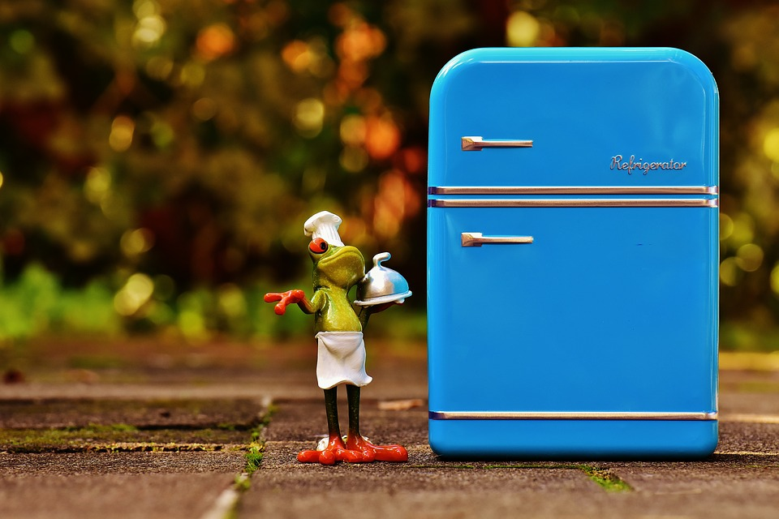

거꾸로 레시피
자취생의 냉장고 속 재료로 조합할 수 있는 적절한 음식의 레시피와 재료들의 수명을 알려주는 애플리케이션
나만의 냉장고로 리스트에 나의 냉장고 속 재료들을 추가하세요!

나만의 냉장고 속 재료들을 추가하여 한 눈에 파악하세요. 이는 용돈의 낭비를 줄이고 겨울잠을 자는 식재료들을 깨워줍니다.
나만의 냉장고 속 재료들로 만들 수 있는
색다른 조합의 요리들
을 찾아보세요
일석이조의 색다른 레시피 애플리케이션
더 이상 아까운 식재료들을 버리지 마세요! 거꾸로 레시피에서는 냉장고 속 식재료들로 만들수 있는 갖가지 자취생들을 위한 레시피들을 찾아줍니다. 만약 오늘은 끌리지 않는 재료가 있다면 한 번의 터치로 제외시킬 수 있습니다. 골치 아픈 쓰레기도 줄이고, 집나간 입맛도 돋우고, 이것이 바로 일석이조입니다.
거꾸로 레시피 앞에서는 모든 것이 의미없는 고민
'혹시라도 냉장고가 텅텅비면 레시피는 어떻게 찾을까?', 거꾸로 레시피 앞에서는 귀여운 고민입니다. 북마크기능을 이용해 내가 좋아하는 레시피를 찜하여 바로바로 찾아보세요.
레시피의 패러다임을 바꾼 거꾸로 레시피, 지금 다운로드받으세요!